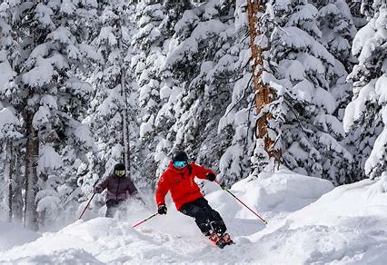

Advice
Link to patrol number and Aspen Snowmass' saftey guidelines:
AspenSnowmassSaftey

Want a lesson? Look for instructors in red and black! Sign up here:
AspenSnowmassLessons
Overall Adive:
- Don't push yourself to hard! Many slopes at Snowmass are harder than they look! Work up to your goals and remeber to take breaks!
- Ski with a partner! Especially on expert terain or tree trails! Some slopes have no service, so get a partner who can help you
- Ski with caution for others, have etiquette, some people are new to skiing!
- Wait your turn in lines, chairlifts will run smoothly if people are in order!
- Stay aware, trees, rocks, plants, people ect... can pop up anywhere!
- Be kind and help others! You will encounter a yard sale or two, be a good person and help fellow skiers to pick up equitment or find medical help
- Ask for help! Instructers and ski partrol roam the mountain during hours and they will be happy to set you on your way, but carry a map!
- Have Fun!
I hope you love Aspen Snowmass as much as I do! However, If you don't, click here for links to other mountains in the Aspen Area:
Alternate Mountains